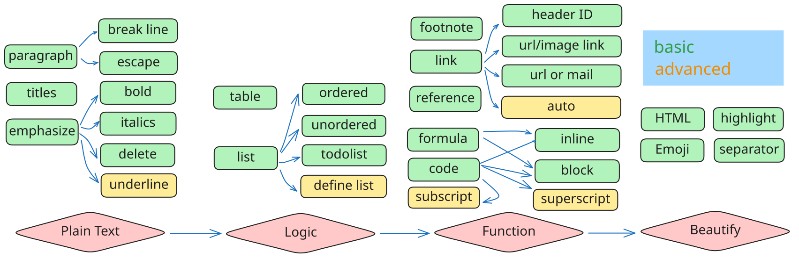
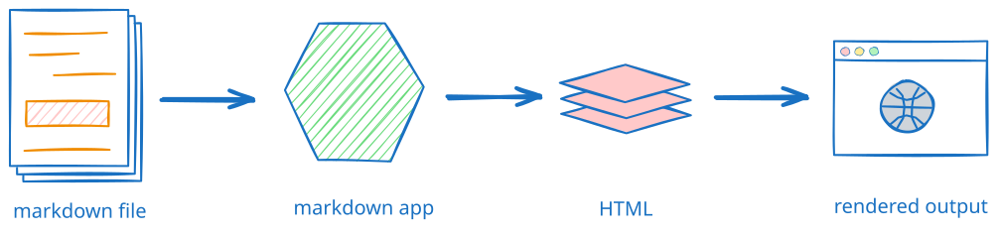

John Gruber于2004年创建了一种轻量级标记语言 Markdown，用于使用纯文本编辑器创建格式化文本。主要设计目标是可读性，即语言可以按原样阅读，而不会看起来像是用标签或格式化指令标记的，不像用"更重"的标记语言格式化的文本，例如RTF，HTML。Gruber避免在Markdown中使用花括号，以非正式地将它们保留给特定于实现的扩展。[1]

下面是各种 markdown 语法汇总：
markdown 语言的目标是使人们能够"使用易于阅读和编写的纯文本格式进行编写，并选择将其转换为结构有效的XHTML（或HTML）。从2012年开始，包括Jeff Atwood和John MacFarlane在内的一群人发起了Atwood所说的标准化工作。下图[2]是markdown渲染过程。

人们总结了 markdown 转其他标记语言的工具列表[3]。其中 commonmark[4] 是一个持续更新的很好的转换的实现标准。
另外，为了扩展功能，不同的平台也推出了自己的 markdown 变体：